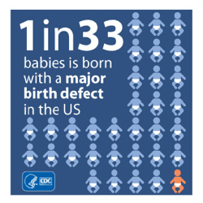

Las 5 cosas más importantes que debe saber sobre los defectos de nacimiento
1. Los defectos de nacimiento son comunes
Anualmente en los Estados Unidos los defectos de nacimiento afectan a 1 de cada 33 bebés. Eso quiere decir que casi 120.000 bebés en los EE. UU. nacen afectados por defectos de nacimiento.

2. Los defectos de nacimiento son costosos
En los Estados Unidos, los defectos de nacimiento (también llamados defectos congénitos) son la causa de más de 139.000 estadías hospitalarias en un solo año (2004) con un costo resultante de 2600 millones de dólares en gastos hospitalarios únicamente.1 Los bebés nacidos con defectos de nacimiento frecuentemente necesitan tratamientos o servicios especiales para crecer bien; esto se suma a los costos de su cuidado. La carga de estos costos es compartida entre las familias, las comunidades y el gobierno.
3. Los defectos de nacimiento son serios
Los defectos de nacimiento son afecciones serias, esto significa que pueden ser muy graves, e incluso poner la vida en riesgo. En los Estados Unidos cada año, cerca de 1 de cada 5 muertes de bebés en el primer año de vida es causada por defectos de nacimiento [2]. Estas condiciones son una de las causas principales de muerte en el primer año de vida y causan 1 de cada 5 muertes infantiles. Los bebés con defectos de nacimiento que sobreviven el primer año de vida pueden tener dificultades durante toda la vida, como problemas con el movimiento físico, el aprendizaje y el habla.
4. La investigación de defectos de nacimiento es importante
Sabemos lo que causa algunos defectos congénitos, como el síndrome de Down y el síndrome de alcoholismo fetal. Sin embargo, para muchos defectos congénitos, las causas son desconocidas. Los Centros de Investigación y Prevención de Defectos de Nacimiento conocidos por sus siglas en inglés como CBDRP, son centros de investigación en todo el país financiados por los CDC para entender las causas de los defectos congénitos. Estos Centros han estado llevando a cabo uno de los s estudios más grandes de defectos de nacimiento jamás emprendidos en los Estados Unidos, llamado Estudio Nacional de Prevención de los Defectos de Nacimiento (NBDPS). El CBDRP continuará la investigación de defectos de nacimiento del NBDPS y examinará más a fondo los resultados prometedores del Estudio de Defectos de Nacimiento para Evaluar las Exposiciones en el Embarazo (BD-STEPS).
5. Algunos defectos de nacimiento se pueden prevenir
Aunque no todos los defectos de nacimiento se pueden prevenir, hay cosas que una mujer puede hacer para ayudar a reducir las posibilidades de que su bebé tenga un defecto de nacimiento:
-
Tome 400 microgramos (mcg) de ácido fólico todos los días, al menos un mes antes de quedar embarazada.
-
Hable con un proveedor de atención médica acerca de tomar cualquier medicamento, incluyendo medicamentos con o sin receta médica y suplementos dietéticos o hierbas medicinales. También hable con un médico antes de suspender cualquier medicamento que se necesitan para el tratamiento de condiciones de salud.
-
Aprenda a prevenir infecciones durante el embarazo.
-
De ser posible, asegúrese que si tiene alguna condición médica está bajo control, antes de quedar embarazada. Algunas condiciones que aumentan el riesgo de defectos de nacimiento son la diabetes y la obesidad.
References:
- Russo CA, Elixhauser A. Hospitalizations for Birth Defects, 2004. HCUP Statistical Brief #24. 2007. Rockville, MD, U.S. Agency for Healthcare Research and Quality.
- Mathews TJ, MacDorman MF. Infant mortality statistics from the 2009 period linked birth/infant death data set. National vital statistics reports; vol 61 no 8. Hyattsville, MD: National Centers for Health Statistics. 2013